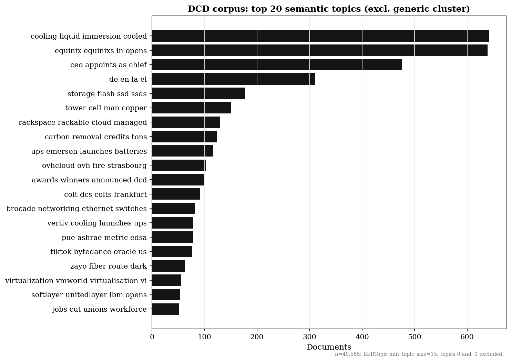

Datacentering Cartography
A multimodal research agenda for innovation studies — B. A. Owoyele, DRIFT / HPI
Articles crawled
40,824
DatacenterDynamics, 2006–2026
Contestation events
1,073
Headline-level signal; peak 2025
BERTopic clusters
73
min_topic_size=15; headline + intro
Actor types detected
10
Regex NER; co-occurrence edges
Contestation rate
2.6%
0.4% (2006) → 3.7% (2025)
Annotation layer (planned): The Cartalog is designed to support collaborative annotation — researchers can flag events, correct actor classifications, add local planning records, and link to non-English sources. Each tab will support an annotation mode linked to the GitHub corpus. See the Building the Cartography Together agenda.
Methodological note: All analyses use headline + intro text only (not full articles). NER uses regex patterns for speed; GLiNER entity linking is the next step. BERTopic clustering uses sentence-transformers/all-MiniLM-L6-v2 embeddings with UMAP + HDBSCAN. Actor co-occurrence counts how many articles mention both actor types in the same headline+intro pair.
Three registers:
Verbal — Hallidayan process types on 40,824 headlines + intros (complete) ·
Visual — CLIP ViT-B/32 + Jancsary coding on 34,869 images (next phase) ·
Spatio-relational — city2graph urban embeddedness in power / residential / commercial graphs (seed run: 3 cities)
Framework: Jørgensen (2012) arenas of transformation · Clarke (2005) situational analysis · Marres (2015) issue mapping · Matthiessen (2015) multimodal registerial cartography · Berente et al. (2019) CITC
Actor Co-occurrence Network
Which actor types co-appear in the same article? Node size = mention count · Edge weight = co-occurrence frequency
Deduplication: Each article generates at most one edge per actor pair (undirected,
sorted() key). Nodes are unique actor types detected via keyword regex. No article is counted twice per pair.
Actor types
Node radius ∝ √(mention count)
Edge width ∝ co-occurrence
Drag nodes to explore
Edge width ∝ co-occurrence
Drag nodes to explore
BERTopic Clusters
73 topics from 40,565 docs · min_topic_size=15 · headlines + intros only
Stop words: BERTopic uses sentence-transformer embeddings (not bag-of-words), so stop words don't affect clustering. They may appear in c-TF-IDF topic labels (e.g. topic 0 "in data center to") but not in the semantic grouping. Topic −1 = outliers (articles fitting no cluster, n=14,867). Topic 0 = residual generic articles (n=20,904). Both are excluded from this table.
Top 20 topics — document counts (topics 0 and −1 excluded)

Topic labels still contain stop words (e.g. "equinixs in opens") — rerun with
CountVectorizer(stop_words="english") to clean. Clustering itself is unaffected.
Intertopic distance map (UMAP — interactive)
Drag/hover to explore. Large central bubble = topic 0 (generic, n=20,904). Scatter = 72 semantic clusters.
Topic hierarchy — dendrogram (interactive)
Which topics merge? Hover merge points to see cluster keywords. Run
run_bertopic.py to generate.Document scatter — every article as a point, coloured by topic
Each dot = one article. Colour = topic cluster. Hover for headline. Generated by
visualize_documents().Topic similarity heatmap
Cosine similarity between topic embeddings. Which topics are semantically close?
DataMapPlot — document landscape

Static high-resolution document map via DataMapPlot.
| # | n | Bar | Keywords | Theme |
|---|
Register Analysis — Hallidayan Process Types
Regex classification of headline verbs · 40,824 articles · contestation vs non-contestation subset
Method: Each headline is classified by dominant Hallidayan process type (material, verbal, mental, relational, enabling, behavioral) using regex verb-family patterns. Headlines are from the DCD crawl; this is a fast approximation — full register analysis requires part-of-speech tagging on expanded text.
Key finding: behavioral processes (+21.5 pp) and enabling processes (+13.4 pp) are strongly over-represented in contestation articles. Material processes dominate non-contestation coverage (66.8%) but drop to 33.7% in contestation.
Spatial Distribution — Location Mentions
City-level mentions extracted from 40,824 DCD headlines + intros · Circle area ∝ mention count
Method: Regex keyword matching for 31 major data center hub cities. Counts articles mentioning each city by name. Next step: GLiNER NER for finer-grained location extraction including smaller markets.
Visual Register Analysis
34,869 image URLs in DCD corpus · CLIP + Gemma 4 pipeline (next phase) · Jancsary et al. coding scheme
Image URLs
34,869
85.4% of articles have image
Status
Next phase
CLIP embeddings + Gemma 4 captions
Coding scheme
Jancsary
Ideational + interpersonal metafunctions
Research question
Does visual register shift as contestation rises?
VRI per year / actor type
Pipeline: Download images from DCD CDN → CLIP ViT-B/32 embeddings → cluster → Gemma 4 (Ollama, 24GB GPU) captions → code against Jancsary et al. scheme → Visual Register Index (VRI) per year / actor type. Do hyperscaler images shift from production facility to nature / community as contestation grows?
Jancsary et al. — Ideational metafunction
| Aspect | Coding | Relevance |
|---|---|---|
| Content | participantsprocessessettings | Truth claims; category manifestations |
| Conjunction | narrativeconceptual | Internal institutional architecture |
Interpersonal metafunction
| Aspect | Coding | Relevance |
|---|---|---|
| Embodied position | contactdistanceangle | Power relations; actorhood; gaze |
| Coding orientation | naturalisticabstract | Aesthetic / emotional legitimation |
Benchmark (Jancsary et al., n=1,023):
Male adults 35% · Female adults 14% · Non-descript 47% · Production facility 12% · Natural spaces 12% · Office 8%
Male adults 35% · Female adults 14% · Non-descript 47% · Production facility 12% · Natural spaces 12% · Office 8%
Expected image category distribution
| Category | Expected register | Legitimation strategy |
|---|---|---|
| Construction / facility | materialdoing | Scale; inevitability |
| Energy / renewables | enablingnaturalistic | Green legitimation |
| Executive portraits | relationalinterpersonal | Authoritative actorhood |
| Protest / community | behavioralsensory | Counter-legitimation |
| Hardware / interior | abstracttechnological | Technical authority |
Research question: Does the ratio of construction / facility images to energy / nature images shift as contestation rises? Does visual register lead or lag verbal register change?